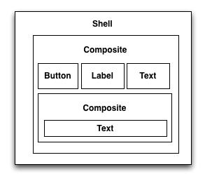

Before a widget can be selected (e.g., with a ui.click(..) call) it needs to be found. This document provides an overview of the important concepts in WindowTester Pro’s widget search strategy.
Widget matchers (implementers of IWidgetMatcher) specify criteria for widget matching. The interface for matching is simple:
public interface IWidgetMatcher {
boolean matches(Object widget);
}
Widget locators are matchers. In other words:
public interface IWidgetLocator extends IWidgetMatcher { ... }
The WindowTester Pro runtime delegates widget finding to a widget finder. The finder roots its search in the current active application window. If there is there is no window (or Shell) owned by the application under test that is active, the finder will throw an exception indicating that it was unable to find a root widget.
Notice that since search is rooted in the active shell this greatly reduces the search space when modal dialogs are open. This helps keep locators as simple as possible (without surrendering robustness).
To get a better sense for how this works, let’s step through an example.
Suppose we have a widget hierarchy that looks like this:

Search through this hierarchy starts at the top shell and proceeds to the first composite, its components (the button, label, text and the second composite and finally the last text widget).
A useful utility class for SWT, SWTDebugHelper, can be used to dump the widget hierarchy to standard out. For example, suppose you are puzzling over a widget lost in the Eclipse “About” window. This snippet will dump the relevant details.
public void testSpelunkAboutWindow() throws Exception {
IUIContext ui = getUI();
ui.click(new MenuItemLocator("Help/About Eclipse SDK"));
ui.wait(new ShellShowingCondition("About Eclipse SDK"));
new DebugHelper().printWidgets();
ui.click(new ButtonLocator("OK"));
ui.wait(new ShellDisposedCondition("About Eclipse SDK"));
}
Running it will dump something like this to the console:
Shell {About Eclipse SDK}<HC|6771254>
Menu {}<HC|28076680>
Composite {}<HC|8795318>
Composite {}<HC|12491256>
Composite {}<HC|15645926>
Composite {}<HC|25411128>
Label {}<HC|4034280>
ScrolledComposite {}<HC|24202381>
ScrollBar {}<HC|22595578>
ScrollBar {}<HC|28381082>
Composite {}<HC|24600030>
StyledText {}<HC|28562961>
Menu {}<HC|28076680>
Label {}<HC|28551878>
Composite {}<HC|9490666>
Composite {}<HC|27996002>
Button {}<HC|30542569>
Button {}<HC|13264564>
Button {}<HC|1886296>
Button {}<HC|27593078>
Button {}<HC|1070095>
Button {}<HC|33468967>
Button {}<HC|6435309>
Button {}<HC|12319308>
Label {}<HC|28561116>
Composite {}<HC|24017036>
ToolBar {}<HC|19776029>
ToolItem {} No ActionContributionItem <HC|6646123>
Composite {}<HC|19084516>
Button {&Feature Details}<HC|32253010>
Button {&Plug-in Details}<HC|4491675>
Button {&Configuration Details}<HC|27672070>
Label {}<HC|20060277>
Button {OK}<HC|31697654>
(Note: “HC” indicates the widget’s hashcode.)
The widget finder navigates the widget hierarchy looking for matches. Locators might match multiple widgets (whether this case is exceptional depends on whether you use IUIContext.find(..) or IUIContext.findAll(..)).
IUIContext.find(ILocator) throws a MultipleWidgetsFoundException in case there is more than one match.IUIContext.click(ILocator) delegates to IUIContext.find(ILocator) and so throws a MultipleWidgetsFoundException in case there is more than one match.IUIContext.findAll(ILocator) returns an array of matches.The snippet:
ui.find(new ButtonLocator("OK"));
finds the “OK” button (and throws an exception if there is none or more than one).
In contrast:
ui.findAll(new ButtonLocator("OK"));
collects all of the “OK” buttons into an array which may or may not be empty.
Commonly it is enough to specify a widget’s class and text to uniquely identify it. For instance, new ButtonLocator("OK") is usually sufficient since it is uncommon to have more than one “OK” Button visible at a time. If there is more than one such Button in the active window, you can disambiguate the search by embellishing the locator with information about the Button's location in the widget containment hierarchy. For instance, if the “OK” button of interest is the child of a Composite (and none other is),
new ButtonLocator("OK", new SWTWidgetLocator(Composite.class))
will uniquely identify it.
Qualification as described above is not the only way to disambiguate widgets. Another even more robust way of disambiguating widgets is to tag them with unique names at development-time.
Naming widgets is the most robust way to identify widgets at runtime. Widgets can be named using the Widget.setData(key,value) method on widgets. That is, if a widget has been named like this:
widget.setData("name", "widgetName");
in a test case, the following will work:
NamedWidgetLocator widgetLocator = new NamedWidgetLocator("widgetName");
IWidgetReference widgetRef = (IWidgetReference)ui.find(widgetLocator);
assertNotNull(widgetRef);
ui.click(widgetLocator); //if you want to click the widget
Wherever possible, you should name widgets that require disambiguation. For more on matching by containment look at the SWTWidgetLocator javadocs.